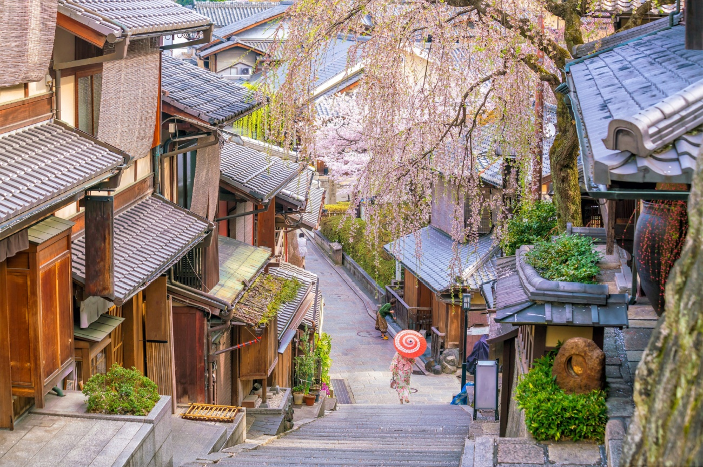
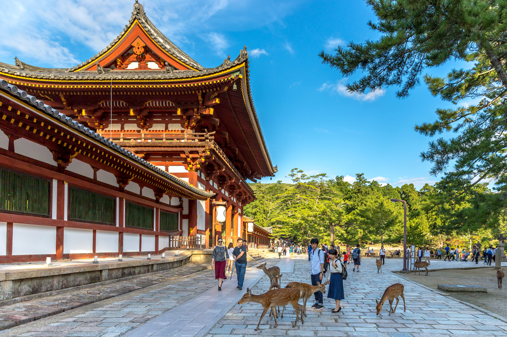

HORIZONTE
Melhores destinos no Japão
Tóquio
A capital do Japão é o destino obrigatório para quem busca a mistura perfeita entre tecnologia e tradição. Tóquio é uma metrópole vibrante, famosa pelo Cruzamento de Shibuya e pelos arranha-céus de Shinjuku. A cidade oferece desde centros comerciais futuristas e luzes de neon até parques tranquilos e templos antigos, como o Senso-ji. É um lugar onde a organização impecável convive com um ritmo frenético e uma gastronomia de classe mundial.

Quioto
Se você quer conhecer o Japão dos samurais e das gueixas, Quioto é o lugar ideal. Com mais de 2.000 templos e santuários, a cidade é o coração histórico do país. O Pavilhão Dourado (Kinkaku-ji) e as fileiras intermináveis de portais vermelhos do Fushimi Inari são cenários inesquecíveis. Caminhar pelas ruas de pedra do distrito de Gion ao entardecer oferece uma viagem no tempo, com casas de chá tradicionais e uma atmosfera de paz que contrasta com as grandes metrópoles.

Osaka
Conhecida como a "Cozinha do Japão", Osaka é o destino favorito dos amantes da culinária de rua. O distrito de Dotonbori, com seus letreiros luminosos gigantes e canais, é um espetáculo à parte. Além da comida, a cidade abriga o imponente Castelo de Osaka, cercado por jardins repletos de cerejeiras. Osaka tem uma energia mais descontraída e alegre, sendo perfeita para quem quer diversão e uma vida noturna agitada.

Nara e o Parque dos Cervos
Localizada pertinho de Quioto, Nara foi a primeira capital do Japão e é famosa por seu parque habitado por centenas de cervos sagrados que circulam livremente. Os animais são tão dóceis que fazem reverências aos turistas em troca de biscoitos! A cidade também abriga o templo Todai-ji, uma estrutura de madeira colossal que guarda uma das maiores estátuas de Buda do mundo. É um passeio encantador que une natureza, animais e espiritualidade.

Dicas de Planejamento: Japão
- Transporte e Conectividade:
- Japan Rail Pass: indispensável para viagens entre cidades.
- Cartão Suica/Pasmo: para metrôs e lojas de conveniência.
- Pocket Wi-Fi: essencial para não se perder nas ruas de Tóquio.
- Etiqueta e Costumes:
- Sapatos: sempre retire ao entrar em templos ou casas (ryokans).
- Gorjetas: não são comuns e podem ser consideradas ofensivas.
- Silêncio: mantenha o volume baixo no transporte público.